PRÁCTICA 5 - EFECTOS DE PRECISIÓN FINITA EN FILTROS DIGITALES
Contents
- 2. Efectos del redondeo en los coeficientes en la respuesta en frecuencia
- 2.1. Respuesta en frecuencia
- 2.2. Determinación de polos y ceros
- 2.3. Cuantificación coeficientes del denominador
- 2.4. Polos de filtros con coeficientes cuantificados
- 2.5. Cuantificación de los coeficientes del numerador
- 2.6. Determinación de la respuesta en frecuencia del filtro con coeficientes cuantificados
- 2.7. Descomposición en secciones de segundo orden
- 2.8. Cuantificación de las secciones de segundo orden
- 2.9. Función de transferencia de secciones de segundo orden cuantificadas
- 2.10. Estabilidad de las secciones de segundo orden cuantificadas
- 3. Efectos de precisión finita en los cálculos
- 3.1. Estudio analítico
- 3.1.1 Determinar Amax
- 3.1.1.1. Señal de entrada arbitraria
- 3.1.1.2. Tono de frecuencia arbitraria
- 3.1.2. Determinar la potencia de ruido
- 3.2. Estudio por simulación
- 3.2.1. Saturación
- 3.2.2. Redondeos en las operaciones
- 4. Aplicación a señales de audio
- 4.1. Inestabilidad por cuantificación de los coeficientes
- 4.2. Saturación por escalado incorrecto
- 4.3. Ruido de redondeo
clc;clearvars;close all;
2. Efectos del redondeo en los coeficientes en la respuesta en frecuencia
load('filtros.mat');
2.1. Respuesta en frecuencia
figure;freqz(B1,A1);title('H1'); figure;freqz(B2,A2);title('H2');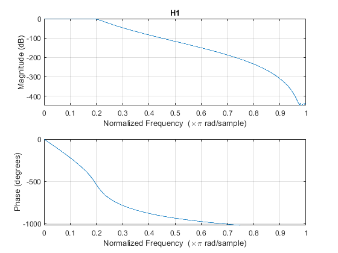 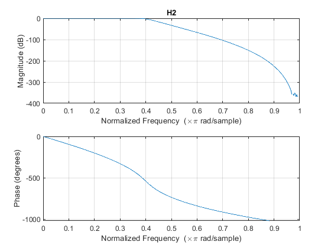
2.2. Determinación de polos y ceros
figure;zplane(B1,A1);title('H1');
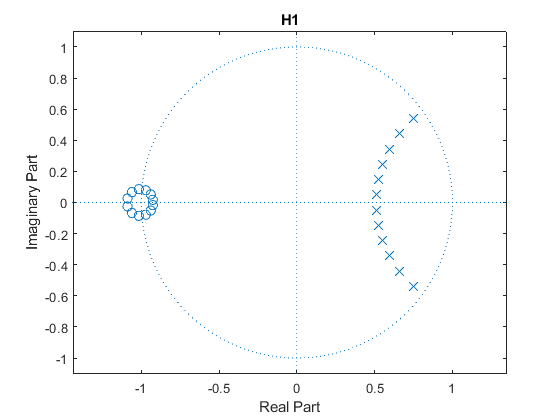 disp('Ceros de H1:');disp(roots(B1)); disp('Polos de H1:');disp(roots(A1)); figure;zplane(B2,A2);title('H2');
Ceros de H1: -1.0881 + 0.0255i -1.0881 - 0.0255i -1.0600 + 0.0672i -1.0600 - 0.0672i -1.0156 + 0.0858i -1.0156 - 0.0858i -0.9711 + 0.0784i -0.9711 - 0.0784i -0.9394 + 0.0516i -0.9394 - 0.0516i -0.9257 + 0.0172i -0.9257 - 0.0172i Polos de H1: 0.7514 + 0.5412i 0.7514 - 0.5412i 0.6605 + 0.4433i 0.6605 - 0.4433i 0.5958 + 0.3434i 0.5958 - 0.3434i 0.5517 + 0.2440i 0.5517 - 0.2440i 0.5243 + 0.1458i 0.5243 - 0.1458i 0.5111 + 0.0485i 0.5111 - 0.0485i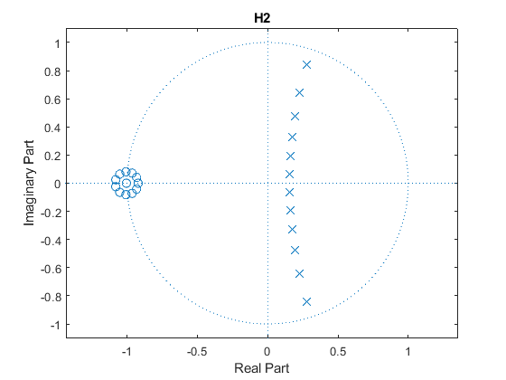
disp('Ceros de H2:');disp(roots(B2)); disp('Polos de H2:');disp(roots(A2));
Ceros de H2: -1.0803 + 0.0246i -1.0803 - 0.0246i -1.0524 + 0.0646i -1.0524 - 0.0646i -1.0082 + 0.0814i -1.0082 - 0.0814i -1.0048 + 0.0000i -0.9638 + 0.0718i -0.9638 - 0.0718i -0.9323 + 0.0413i -0.9323 - 0.0413i -0.9211 + 0.0000i Polos de H2: 0.2749 + 0.8388i 0.2749 - 0.8388i 0.2266 + 0.6442i 0.2266 - 0.6442i 0.1957 + 0.4779i 0.1957 - 0.4779i 0.1761 + 0.3300i 0.1761 - 0.3300i 0.1645 + 0.1937i 0.1645 - 0.1937i 0.1590 + 0.0639i 0.1590 - 0.0639i
2.3. Cuantificación coeficientes del denominador
Las constantes K1 y K2 para que los coeficientes almacenados del denominador sean menores que la unidad son:
K1=ceil(max(abs(A1))); K2=ceil(max(abs(A2))); disp(['K1=',num2str(K1)]); disp(['K2=',num2str(K2)]);
K1=78 K2=5
Los coeficientes normalizados de ambos filtros son:
ak1=A1/K1; ak2=A2/K2; disp('a1:');disp(ak1'); disp('a2:');disp(ak2');
a1:
0.0128
-0.0922
0.3120
-0.6551
0.9470
-0.9909
0.7682
-0.4439
0.1896
-0.0583
0.0122
-0.0016
0.0001
a2:
0.2000
-0.4787
0.8227
-0.9189
0.7975
-0.5209
0.2682
-0.1060
0.0322
-0.0072
0.0011
-0.0001
0.0000
Cuantificamos
B=16; ak1=cuantif(ak1,B);ak2=cuantif(ak2,B);
Obtenemos A1q y A2q:
A1q=K1*ak1; A2q=K2*ak2; disp('A1q:');disp(A1q'); disp('A2q:');disp(A2q');
A1q:
0.9998
-7.1889
24.3400
-51.0962
73.8652
-77.2930
59.9205
-34.6283
14.7849
-4.5443
0.9546
-0.1214
0.0071
A2q:
0.9999
-2.3937
4.1136
-4.5947
3.9875
-2.6044
1.3408
-0.5301
0.1611
-0.0360
0.0056
-0.0006
0
2.4. Polos de filtros con coeficientes cuantificados
figure;zplane(1,A1q);title('H1');
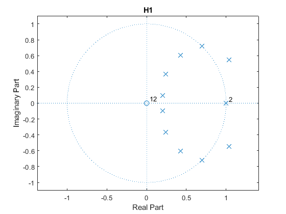 disp('Polos de H1 cuantificados:');disp(roots(A1q)); figure;zplane(1,A2q);title('H2');
Polos de H1 cuantificados: 1.0365 + 0.5474i 1.0365 - 0.5474i 0.6946 + 0.7214i 0.6946 - 0.7214i 1.0000 + 0.0000i 1.0000 - 0.0000i 0.4252 + 0.6024i 0.4252 - 0.6024i 0.2405 + 0.3683i 0.2405 - 0.3683i 0.1985 + 0.0994i 0.1985 - 0.0994i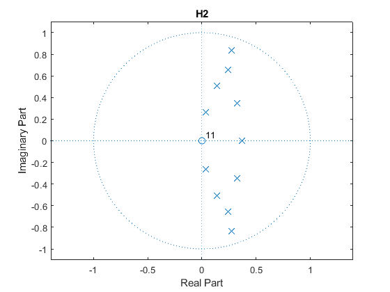
disp('Polos de H2 cuantificados:');disp(roots(A2q));
Polos de H2 cuantificados: 0.0000 + 0.0000i 0.2739 + 0.8368i 0.2739 - 0.8368i 0.2415 + 0.6560i 0.2415 - 0.6560i 0.1361 + 0.5051i 0.1361 - 0.5051i 0.3256 + 0.3489i 0.3256 - 0.3489i 0.3700 + 0.0000i 0.0349 + 0.2621i 0.0349 - 0.2621i
El filtro 1 es inestable, ya que varios polos se encuentran fuera del círculo unidad (suponemos que es un filtro causal ya que, si no, no sería implementable).
2.5. Cuantificación de los coeficientes del numerador
Bq=cuantif(B2,B);
disp('Bq:');disp(Bq');
Bq:
0.0001
0.0013
0.0072
0.0241
0.0543
0.0869
0.1014
0.0869
0.0543
0.0241
0.0072
0.0013
0.0001
2.6. Determinación de la respuesta en frecuencia del filtro con coeficientes cuantificados
figure;freqz(Bq,A2q);title('H2 cuantificado'); figure;freqz(B2,A2);title('H2 sin cuantificar');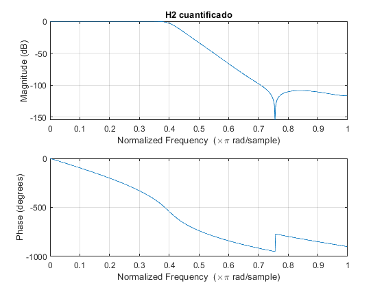 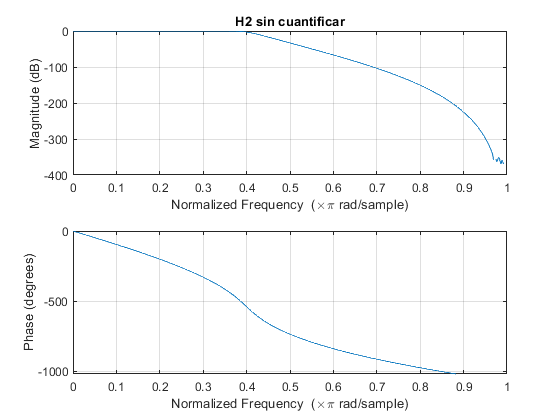
2.7. Descomposición en secciones de segundo orden
[sos1, g] = tf2sos(B1, A1); sos1
sos1 =
1.0000 2.1763 1.1847 1.0000 -1.0223 0.2636
1.0000 2.1201 1.1282 1.0000 -1.0486 0.2961
1.0000 2.0312 1.0389 1.0000 -1.1035 0.3640
1.0000 1.9422 0.9492 1.0000 -1.1916 0.4729
1.0000 1.8789 0.8852 1.0000 -1.3209 0.6327
1.0000 1.8514 0.8572 1.0000 -1.5027 0.8575
2.8. Cuantificación de las secciones de segundo orden
K=ceil(max(max(abs(sos1)))); sos1k=sos1/K; sos1q=cuantif(sos1k,B); sos1q=sos1q*K
sos1q =
1.0000 2.1763 1.1846 1.0000 -1.0223 0.2636
1.0000 2.1201 1.1282 1.0000 -1.0486 0.2962
1.0000 2.0313 1.0389 1.0000 -1.1034 0.3639
1.0000 1.9422 0.9492 1.0000 -1.1916 0.4730
1.0000 1.8788 0.8852 1.0000 -1.3209 0.6327
1.0000 1.8513 0.8571 1.0000 -1.5027 0.8575
2.9. Función de transferencia de secciones de segundo orden cuantificadas
[BB1q,AA1q]=sos2tf(sos1q,g); disp('BB1q =');disp(BB1q'); disp('AA1q =');disp(AA1q');
BB1q =
1.0e-03 *
0.0001
0.0014
0.0078
0.0260
0.0585
0.0936
0.1092
0.0936
0.0585
0.0260
0.0078
0.0014
0.0001
AA1q =
0.9998
-7.1884
24.3358
-51.0888
73.8563
-77.2840
59.9163
-34.6255
14.7853
-4.5447
0.9537
-0.1226
0.0073
2.10. Estabilidad de las secciones de segundo orden cuantificadas
figure;zplane(BB1q,AA1q);title('H1 cuantificado');
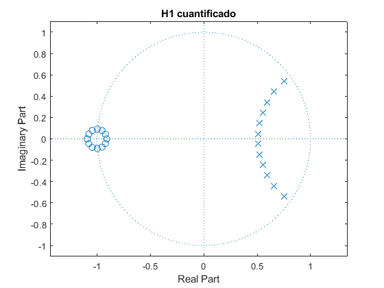 Al usar una estructura en cascada disminuimos el ruido de cuantificación lo que supone implementar el filtro de forma estable.
3. Efectos de precisión finita en los cálculos
Con ayuda del apartado 6.9.2. Scaling in Fixed-Point Implementations of IIR Systems
Oppenheim, Alan V., and Ronald W. Schafer. Discrete-Time Signal Processing. 3rd ed. Upper Saddle River [N.J: Pearson, 2010]
load('coefs.mat');
3.1. Estudio analítico
Distinguimos dos casos:
- Señal de entrada arbitraria.
- Tono de frecuencia arbitraria.
3.1.1 Determinar Amax
3.1.1.1. Señal de entrada arbitraria
Existen dos nodos críticos donde se producen sumas, estos se encuentran a la entrada y a la salida del sistema.
Para el nodo de entrada la respuesta en frecuencia es la del sistema formada unicamente por polos.
ha=impz(1,A); Amaxaa=1/sum(abs(ha))
ha=impz(1,A); Amaxaa=1/sum(abs(ha))
Amaxaa =
0.1659
Para el nodo de salida la respuesta en frecuencia es la del sistema completo(formada por polos y ceros).
hb=impz(B,A); Amaxba=1/sum(abs(hb))
hb=impz(B,A); Amaxba=1/sum(abs(hb))
Amaxba =
0.4814
3.1.1.2. Tono de frecuencia arbitraria
Existen dos nodos críticos donde se producen sumas, estos se encuentran a la entrada y a la salida del sistema.
Para el nodo de entrada la respuesta en frecuencia es la del sistema formada unicamente por polos.
Ha=freqz(1,A); Amaxat=1/max(abs(Ha))
Ha=freqz(1,A); Amaxat=1/max(abs(Ha))
Amaxat =
0.2027
Para el nodo de salida la respuesta en frecuencia es la del sistema completo(formada por polos y ceros).
Hb=freqz(B,A); Amaxbt=1/max(abs(Hb))
Hb=freqz(B,A); Amaxbt=1/max(abs(Hb))
Amaxbt =
0.9998
Amax=min(min(Amaxaa,Amaxba),min(Amaxat,Amaxbt))
Amax =
0.1659
3.1.2. Determinar la potencia de ruido
Para M ceros y N polos, la potencia de ruido es:
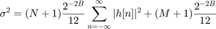
b=8;M=5;N=4;
Pr = (N+1)*2^(-2*b)*sum(abs(hb).^2)/12+(M+1)*2^(-2*b)/12;
disp(['La potencia de ruido es: ',num2str(Pr)]);
La potencia de ruido es: 1.0743e-05
3.2. Estudio por simulación
3.2.1. Saturación
x=randn(1,500); % 3.2.1.1. x1=0.95*Amax*x/max(x); y1=filter(B,A,x1);yc1=filtraq(B,A,x1,30); figure;plot(y1);hold on;stem(yc1); title('Señal aleatoria filtrada con valor máximo de 0.95 \times A_{max}'); legend('Sin cuantificar','Cuantificada con 30 bits'); % 3.2.1.2. x2=x/max(x); y2=filter(B,A,x2);yc2=filtraq(B,A,x2,30); figure;plot(y2);hold on;stem(yc2); title('Señal aleatoria filtrada con valor máximo de 1'); legend('Sin cuantificar','Cuantificada con 30 bits'); % La señal en el nodo crítico es: y3=filter(1,A,x2);yc3=filtraq(1,A,x2,30); figure;plot(y3);hold on;stem(yc3); title('Señal en el nodo crítico'); legend('Sin cuantificar','Cuantificada con 30 bits');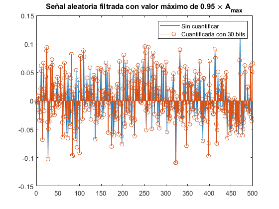 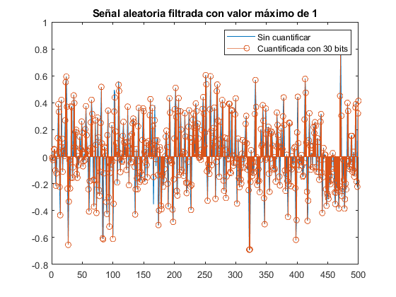 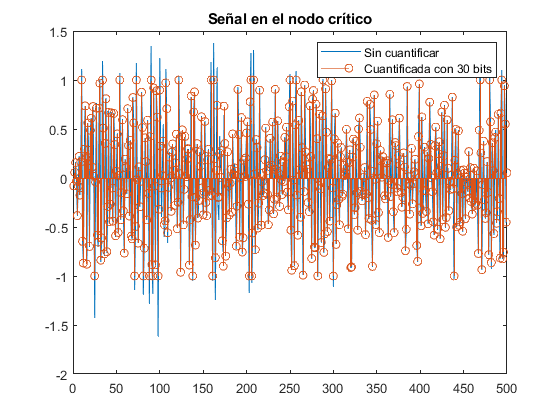
3.2.2. Redondeos en las operaciones
% 3.2.2.1. x4=0.3*Amax*x/max(x); % 3.2.2.2. y4=filter(B,A,x4);yc4=filtraq(B,A,x4,8); % 3.2.2.3. figure;plot(y4);hold on;plot(yc4); title('Señal aleatoria filtrada con valor máximo de 0.3 \times A_{max}'); legend('Sin cuantificar','Cuantificada con 8 bits'); xlim([351,450]);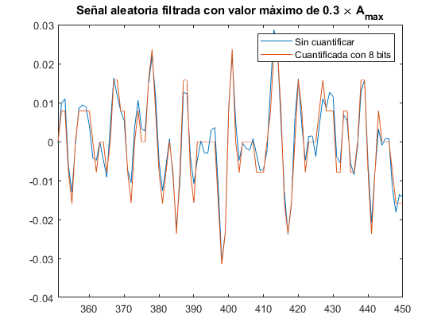
Se puede observar ruido de cuantificación.
% 3.2.2.4. y4d=yc4'-y4; Prs=sum(abs(y4d).^2)^2; disp(['La potencia de ruido teórica es: ',num2str(Pr)]); disp(['Mientras que la potencia de ruido real es: ',num2str(Prs)]);
La potencia de ruido teórica es: 1.0743e-05 Mientras que la potencia de ruido real es: 1.4984e-05
Los resultados son bastante similares. Además, observamos que el ruido que introduce una cuantificación de 8 bits parece pequeño.
4. Aplicación a señales de audio
4.1. Inestabilidad por cuantificación de los coeficientes
[x,fs]=audioread('audio.wav'); Amax=1/sum(abs(impz(1,A1))); y=filtraqr(B1,A1q,x*Amax,28)/Amax; z=filtraqr(B1,A1,x*Amax,28)/Amax; audiowrite('4.1_y.wav', y, fs); audiowrite('4.1_z.wav', z, fs);
Warning: Data clipped when writing file.
Podemos oir un pitido en la señal filtrada con el filtro inestable (cuantificado), mientras que la señal filtrada con el filtro implementado en cascada (sin cuantificar) se escucha perfectamente.
4.2. Saturación por escalado incorrecto
y=filtraqr(B1,A1,x*Amax*10,28)/Amax/10;
audiowrite('4.2_y.wav', y, fs);
Se puede escuchar como al principio filtra perfectamente, pero llega un momento en el que satura y se escucha un pitido.
4.3. Ruido de redondeo
16 bits: Se escucha mucho ruido
z=filtraqr(B1,A1,x*Amax,16)/Amax;
audiowrite('4.3_y_16_bits.wav', z, fs);
delta = (2/2^16);
Amax_16bits = Amax/delta;
19 bits: Se escucha mejor que con 16 bits
z=filtraqr(B1,A1,x*Amax,19)/Amax;
audiowrite('4.3_y_19_bits.wav', z, fs);
delta = (2/2^19);
Amax_19bits = Amax/delta;